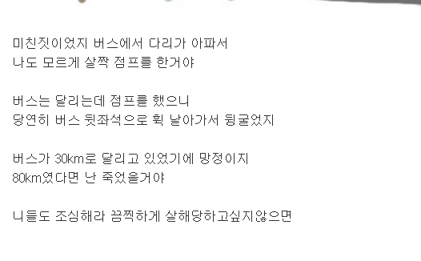

나 오늘 버스에서 끔찍하게 살해당할 뻔했다.
출처 나무위키 항목(끔살)
원문

설명
유래는 디시인사이드 와갤의 와갤러 이자 꾸준글러인 '만년감기'의 꾸준글이다.
초등학교 시절(또는 국민학교 시절) 매일 졸지만 않았어도 저 꾸준글이 낚시라는 것은 본능적으로 알 수 있을 것이다. 중학교 1학년 때 관성의 법칙을 배우고 나면 이론적으로 반박할 수도 있게 된다. 그러나 이 글에 반박하면 그 즉시 와우 갤러리에서 뉴비 취급을 받는다. 단, "그거 탄성인가 때문에 안 되지 않음?"이라고 반박하면 괜찮다. 탄성만이 허락된다는 걸 알아두자. 이유는 그게 꾸준글에 달리는 '꾸준 댓글'이기 때문이다.
반면 게임에선 관성을 구현하기 매우 어렵기 때문에, 실제로 저 말이 통한다.